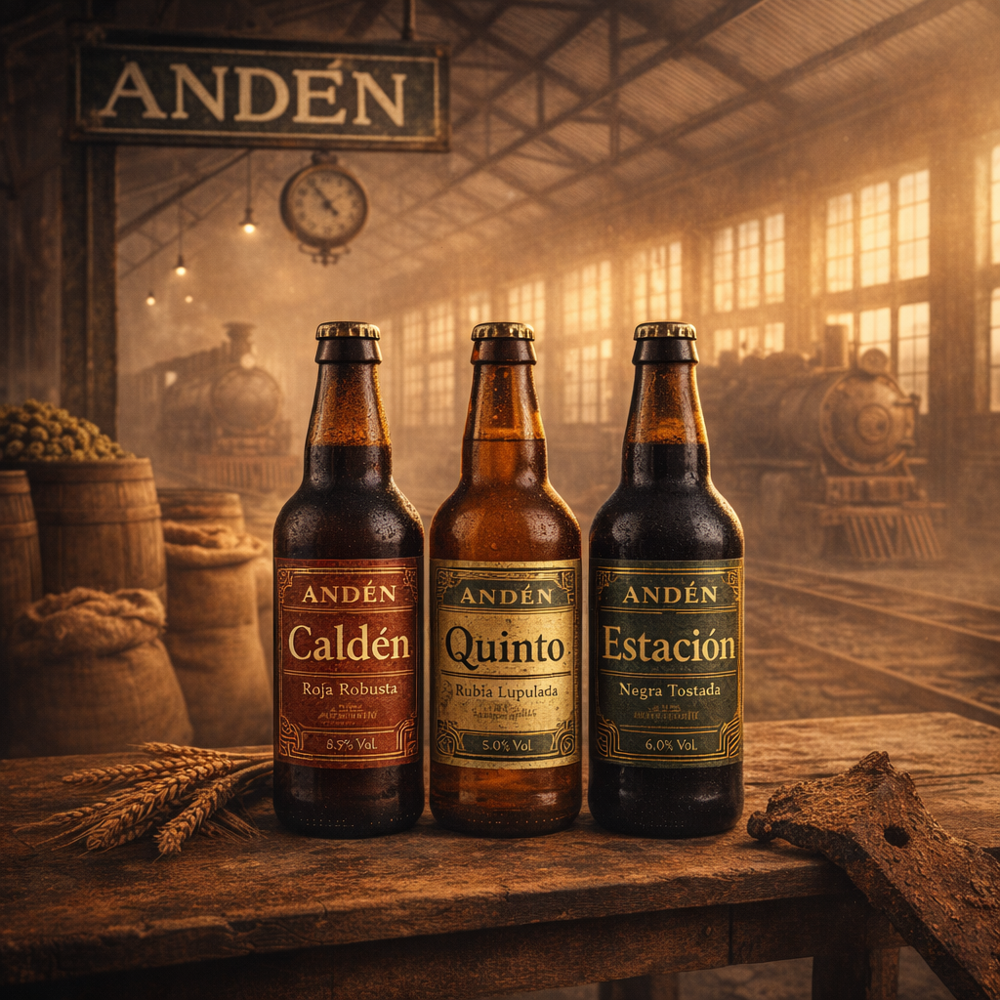

Cervecería artesanal argentina
El sabor de lo artesanal, la esencia de nuestra ciudad
Cerveza artesanal para compartir, con la identidad de nuestro patrimonio ferroviario.
Ver cervezasUna fábrica con nombre de andén
Andén es una fábrica y marca de cerveza artesanal argentina en formación. Producimos en lotes chicos, con recetas propias y la identidad del patrimonio ferroviario que nos vio crecer.
Nuestras primeras recetas
Tres estilos, tres inspiraciones de la zona. Producimos en lotes chicos.
